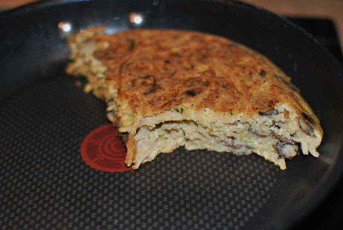

Nudelomlett mit Pilzen

- Zubereitung: ca. 35 Minuten
- Für 2 Personen
Zutaten
- 150 g Spaghetti
- 300 g Champignons
- 2 Knoblauchzehen
- 2 Frühlingszwiebeln
- 1/2 Bund Basilikum
- 4 Eier (Größe S)
- 2 EL Sahne
- 40 g Parmesan, gerieben
- 2 EL Olivenöl
Zubereitung
- Für die Nudeln reichlich Wasser mit Salz zum Kochen bringen. Die Nudel darin nach Packungsangabe al dente kochen. In ein Sieb abgießen, kalt abschrecken, abtropfen und abkühlen lassen.
- Inzwischen die Pilze mit feuchtem Küchenpapier sauber abreiben, die Stielenden abschneiden. Die Pilze in dünne Scheiben schneiden. Die Knoblauchzehen schälen und ebenfalls in feine Scheiben schneiden. Die Frühlingszwiebeln putzen und waschen, die
weißen und hellgrünen Teile in feine Ringe schneiden. Die Kräuter waschen und trocken schütteln. Die Blättchen abzupfen und fein hacken.
- Die Eier mit der Sahne und dem Käse gründlich verrühren und mit Salz und Pfeffer würzen.
- In einer beschichteten Pfanne 1 EL Öl erhitzen. Die Pilze darin unter Rühren bei starker Hitze vier bis fünf Minuten braten, bis die Flüssigkeit, die sich dabei bildet, wieder verdampft. Knoblauch, Zwiebelringe und Kräuter untermischen und die Pilze
salzen und pfeffern. In einer Schüssel mit den Nudeln und der Eiermischung verrühren.
- Das übrige Öl in einer Pfanne erhitzen. Nudelmischung einfüllen und bei schwacher bis mittlerer Hitze circa 10 Minuten braten. Auf einen Teller gleiten lassen, mit der ungebratenen Seite nach unten wieder in die Pfanne stürzen und noch einmal 5
Minuten braten.